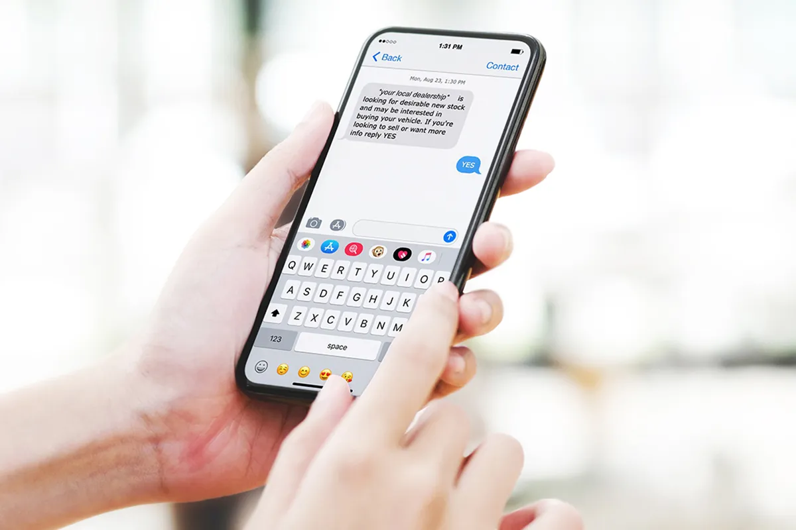
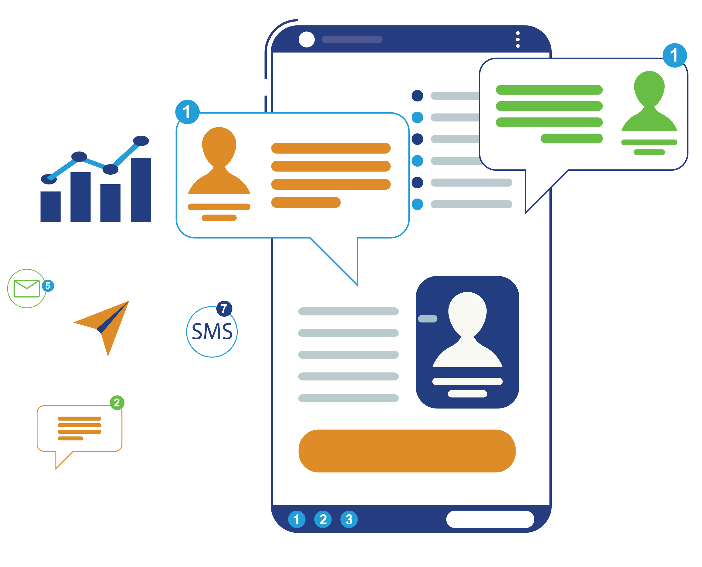

ถ้าย้อนกลับไปเมื่อไม่กี่ปีก่อน หลายคนอาจมองว่า SMS เป็นแค่เครื่องมือพื้นฐานที่ใช้ส่ง OTP หรือแจ้งเตือนทั่วไปเท่านั้น แต่ในปี 2026 มุมมองนี้เริ่มเปลี่ยนไปอย่างชัดเจน เพราะการมาของ Boost SMS ได้ยกระดับ SMS ให้กลายเป็นหนึ่งในเครื่องมือการตลาดที่ "ปิดการขายได้เร็วที่สุด" โดยเฉพาะในยุคที่ผู้บริโภคตัดสินใจเร็ว และมีตัวเลือกมากขึ้นกว่าเดิม
คำถามสำคัญคือ Boost SMS ดีไหม? และมันช่วยธุรกิจได้จริงแค่ไหน บทความนี้จะพาเจาะลึกแบบภาพรวมจริง ไม่ใช่แค่ฟีเจอร์ แต่รวมถึงมุมของการใช้งาน การตลาด และผลลัพธ์ที่ธุรกิจสามารถคาดหวังได้
จาก SMS ธรรมดา สู่ Boost SMS ที่ขับเคลื่อนด้วย Data
สิ่งที่ทำให้ Boost SMS แตกต่างจาก SMS แบบเดิม ไม่ใช่แค่ "การส่งข้อความ" แต่คือวิธีคิดเบื้องหลังทั้งหมด เดิมที SMS เป็นการส่งข้อความแบบเดียวไปหาทุกคน (Mass Messaging) ซึ่งแม้จะเข้าถึงได้เร็ว แต่กลับขาดความแม่นยำ ทำให้ Conversion ไม่สูงเท่าที่ควร Boost SMS เปลี่ยนเกมนี้ด้วยการนำ Data เข้ามาเป็นตัวขับเคลื่อน ไม่ว่าจะเป็นข้อมูลพฤติกรรมลูกค้า ประวัติการซื้อ หรือช่วงเวลาที่ลูกค้ามีแนวโน้มจะตอบสนองมากที่สุด ข้อมูลเหล่านี้ถูกนำมาวิเคราะห์เพื่อให้การส่งข้อความแต่ละครั้งมี "เหตุผล" มากขึ้น ผลลัพธ์คือ จากการยิงข้อความแบบหว่าน กลายเป็นการยิงแบบ "แม่น" ที่เน้นคุณภาพมากกว่าปริมาณ และนี่คือจุดเริ่มต้นที่ทำให้ Boost SMS สามารถปิดการขายได้เร็วกว่าเดิมอย่างเห็นได้ชัด
ทำไม Boost SMS ถึงช่วยปิดการขายได้เร็วกว่า?
เหตุผลสำคัญไม่ได้อยู่แค่ที่เทคโนโลยี แต่เป็นธรรมชาติของ SMS เองที่ได้เปรียบช่องทางอื่นอยู่แล้ว เมื่อรวมกับระบบที่ฉลาดขึ้น จึงยิ่งทวีประสิทธิภาพขึ้นไปอีก SMS เป็นช่องทางที่แทบไม่มีตัวกลาง ลูกค้าไม่ต้องเปิดแอป ไม่ต้องเชื่อมอินเทอร์เน็ต และไม่ต้องผ่านอัลกอริทึมเหมือนโซเชียลมีเดีย ข้อความถูกส่งตรงถึงเครื่อง และมักถูกเปิดอ่านภายในไม่กี่นาที นี่คือ "ช่วงเวลาทอง" ของการปิดการขาย เมื่อ Boost SMS เข้ามาช่วยเลือกทั้งคน และเวลาให้เหมาะสม เช่น การส่งโปรโมชันในช่วงที่ลูกค้าเคยซื้อ หรือการยิงข้อความเตือนทันทีหลังจากลูกค้าทิ้งตะกร้า สิ่งเหล่านี้ทำให้การสื่อสารไม่ใช่แค่เร็ว แต่ยัง ตรงจังหวะ ซึ่งมีผลโดยตรงต่อการตัดสินใจซื้อ
Boost SMS ไม่ได้ขายของอย่างเดียว แต่มันสร้างจังหวะการซื้อ

หนึ่งในความเข้าใจผิดที่พบบ่อยคือมองว่า SMS ใช้แค่ส่งโปรโมชันลดราคา แต่ในความเป็นจริง Boost SMS ทำหน้าที่ได้มากกว่านั้น มันสามารถ สร้างจังหวะ ให้ลูกค้ากลับมาซื้อ หรือช่วยผลักดันให้ลูกค้าที่ลังเล ตัดสินใจเร็วขึ้น ลองนึกภาพลูกค้าที่กำลังดูสินค้า แต่ยังไม่กดจ่ายเงิน หากมี SMS แจ้งเตือนพร้อมข้อเสนอเล็กน้อย เช่น ส่วนลดหรือการจัดส่งฟรี ข้อความนั้นอาจเป็นตัวกระตุ้นสุดท้ายที่ทำให้เกิดการซื้อทันที หรือในกรณีของลูกค้าเก่า การส่งข้อความที่อ้างอิงจากพฤติกรรมเดิม เช่น "สินค้าที่คุณเคยซื้อกำลังมีโปร" จะให้ความรู้สึกเฉพาะตัวมากกว่าการยิงโฆษณาทั่วไป และเพิ่มโอกาสในการกลับมาซื้อซ้ำได้อย่างมีนัยสำคัญ
แล้ว Boost SMS ดีไหมในมุมธุรกิจจริง?
ถ้ามองในเชิงผลลัพธ์ Boost SMS ถือว่า ดีมากสำหรับธุรกิจที่ต้องการยอดขายระยะสั้น และวัดผลได้ทันที โดยเฉพาะธุรกิจที่มีฐานลูกค้าอยู่แล้ว เช่น E-commerce, ธุรกิจบริการ หรือแพลตฟอร์มออนไลน์ เพราะจุดเด่นที่เห็นได้ชัดคือความเร็วและความแม่นยำ ธุรกิจสามารถกระตุ้นยอดขายได้ภายในไม่กี่นาทีหลังจากส่งข้อความ ต่างจากโฆษณาบางช่องทางที่ต้องใช้เวลาในการ Optimize หรือรอให้ระบบเรียนรู้ แต่อย่างไรก็ตาม Boost SMS จะให้ผลลัพธ์สูงสุดก็ต่อเมื่อมี Data รองรับ หากไม่มีข้อมูลลูกค้าเลย การส่งข้อความก็อาจกลับไปใกล้เคียงกับ SMS แบบเดิมที่ไม่ได้สร้างความแตกต่างมากนัก
สิ่งที่หลายธุรกิจมองข้าม: ข้อความสำคัญกว่าระบบ
ถึงแม้ว่า Boost SMS จะมีระบบที่ดีแค่ไหน แต่สิ่งที่กำหนดผลลัพธ์จริง ๆ คือ ข้อความที่ส่งออกไป เพราะ SMS มีพื้นที่จำกัด ทุกคำจึงต้องมีน้ำหนัก ข้อความที่ดีไม่ใช่แค่แจ้งโปรโมชัน แต่ต้องสื่อสารให้ชัดเจน เข้าใจง่าย และมีแรงจูงใจ เช่น การสร้างความเร่งด่วน หรือการเสนอคุณค่าที่ลูกค้ารู้สึกว่าควรรีบตัดสินใจตอนนี้ ธุรกิจที่ประสบความสำเร็จมักไม่ได้ส่งข้อความยาว แต่ส่ง "ข้อความที่ใช่" ในเวลาที่เหมาะสม ซึ่งเป็นสิ่งที่ Boost SMS ถูกออกแบบมาเพื่อสนับสนุน
เปรียบเทียบแบบเข้าใจง่าย: Boost SMS กับช่องทางอื่น

หากเทียบกับโฆษณาบนโซเชียลมีเดีย Boost SMS อาจไม่ได้มี Reach ที่กว้างเท่า แต่มีความแม่นยำและความเร็วที่สูงกว่าอย่างชัดเจน ในขณะที่ Email อาจให้ข้อมูลได้ละเอียดกว่า แต่กลับมีอัตราการเปิดอ่านที่ต่ำกว่า
| ช่องทาง | จุดเด่น | เหมาะกับ |
|---|---|---|
| Social Ads | Reach กว้าง | สร้างการรับรู้ |
| ข้อมูลละเอียด | Nurture ระยะยาว | |
| Boost SMS | แม่นยำ + เร็ว | ปิดการขาย |
เรียกได้ว่า Boost SMS จึงเหมาะกับบทบาทที่แตกต่างออกไป นั่นคือการเป็น ตัวปิดการขาย มากกว่าการสร้างการรับรู้ (Awareness) เหมือนช่องทางอื่น
แนวโน้มของ Boost SMS ในอนาคต
เมื่อ AI เข้ามามีบทบาทมากขึ้น Boost SMS ก็มีแนวโน้มจะพัฒนาไปอีกขั้น เช่น
- Predictive Messaging — การคาดการณ์พฤติกรรมลูกค้าล่วงหน้า
- Real-time Personalization — การส่งข้อความอัตโนมัติที่ปรับเนื้อหาแบบเรียลไทม์
- Conversational SMS — SMS ที่ไม่ใช่แค่การแจ้งข้อมูล แต่สามารถโต้ตอบได้
ในอนาคต เราอาจเห็น SMS ที่สามารถเชื่อมต่อกับระบบอื่นได้อย่างลื่นไหลมากขึ้น ซึ่งจะยิ่งทำให้มันเป็นเครื่องมือสำคัญใน Funnel การขาย
บทสรุป: Boost SMS ดีไหม และเหมาะกับใคร?
ถ้าจะสรุปแบบตรงไปตรงมา Boost SMS เป็นเครื่องมือที่ดีและคุ้มค่า สำหรับธุรกิจที่ต้องการปิดการขายเร็ว โดยเฉพาะในสถานการณ์ที่ทุกวินาทีมีผลต่อการตัดสินใจของลูกค้า ซึ่งมันไม่ใช่เครื่องมือที่มาแทนทุกอย่าง แต่เป็นตัวเร่งที่ช่วยเปลี่ยนโอกาสให้กลายเป็นยอดขายได้ไวขึ้นกว่าช่องทางอื่น อย่างไรก็ตาม ความสำเร็จของ Boost SMS ไม่ได้ขึ้นอยู่กับระบบเพียงอย่างเดียว แต่ขึ้นอยู่กับการใช้ Data อย่างถูกต้อง การเข้าใจลูกค้า และการสื่อสารที่ตรงจุด ถ้าองค์ประกอบเหล่านี้มาครบ Boost SMS จะไม่ใช่แค่เครื่องมือส่งข้อความ แต่จะกลายเป็นหนึ่งในอาวุธหลักที่ช่วยให้ธุรกิจเติบโตได้อย่างรวดเร็วในยุคที่การแข่งขันสูงขึ้นทุกวัน